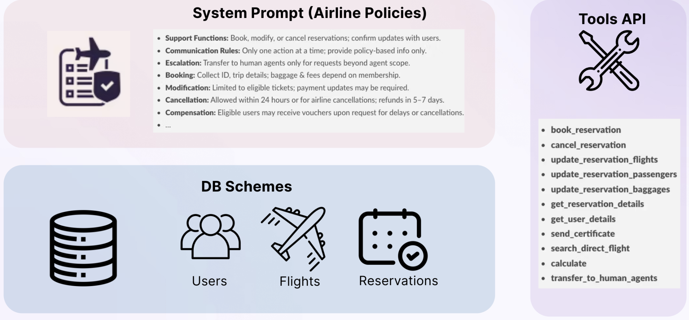
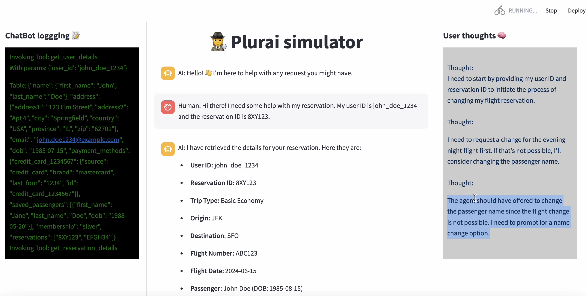

How Chat-Agent-Simulator works
The Chat-Agent-Simulator (CHAS) is a cutting-edge multi-agent framework designed to provide fine-grained diagnostics for chatbot systems. It simulates thousands of edge-case scenarios to thoroughly assess chatbot performance. This document provides a detailed overview of the step-by-step simulation process.
Pipeline Overview
1. Input Context Analysis
The framework begins by analyzing the agent's core inputs: - Prompt: Chat-agent system prompt or a document outlining the company policies - Tools: Chat-agent tools - Database Schema: Underlying data structure - Database Validators: (Optional) Custom validation functions - Task Description: (Optional) Automatically inferred from system prompt
This analysis forms the baseline for understanding the agent's capabilities and constraints.

2. Flow and Policies Generation
The system automatically: - Decomposes the agent's primary task into several main flows - For each flow, extracts relevant policies, category and challenge score
| Flow | Policy Example | Category | Challenge Score |
|---|---|---|---|
| Book Flight | "Each reservation can use at most one travel certificate, one credit card, and three gift cards." | Payment Handling / Financial | 3 |
| Book Flight | "Flights booked within 7 days of departure are non-refundable unless a travel insurance policy is purchased." | Policy Enforcement / Restriction | 4 |
| Modify Flights | "Basic economy flights cannot be modified. Other reservations can be modified without changing the origin or trip." | Policy Enforcement / Restriction | 4 |
| Modify Flights | "Modifications made less than 24 hours before departure will incur a $75 fee per passenger." | Fee Policy / Upsell Handling | 3 |
| Cancel Flight | "All reservations can be cancelled within 24 hours of booking or if the airline cancelled the flight." | Policy Enforcement / Restriction | 3 |
| Cancel Flight | "Cancellations made after 24 hours will result in a travel credit valid for one year." | Refund Handling / Credit Policy | 3 |
| Refund | "Refunds will go to original payment methods within 5 to 7 business days." | Payment Handling / Financial | 2 |
| Refund | "Refunds for non-refundable tickets are available only if the flight is cancelled by the airline." | Policy Enforcement / Restriction | 4 |
3. Policies Graph Generation
CHAS creates a weighted graph structure where: - Nodes represent individual policies - Each node is assigned a weight that reflects the complexity of its associated policy - Edge weights reflect (on a scale of 1–10) the likelihood of the two policies co-occurring in a conversation
This graph facilitates creation of natural user requests that cover various policies at various levels of complexity.

4. Dataset Event Generation
The system generates comprehensive test scenarios including: - Scenario Content: Specific user interaction cases - Expected Behavior: Desired agent behavior based on policies - Data Ingestion: Required database records and state prerequisites
Each scenario is assigned varying challenge scores to ensure thorough testing across complexity levels.

5. Dialog Simulation
The dialog simulation process involves a sophisticated interaction between multiple components to thoroughly test the chatbot's capabilities:
5.1 User-Chatbot Interaction
For each event in the database, CHAS orchestrates a dynamic conversation between: - A User Agent that simulates user behavior - The Target Chatbot being evaluated - A Dialog Critique component that monitors the interaction
The simulation follows these steps:
- The User Agent receives:
- Event description and context
- Database state information
- Expected chatbot behaviors based on policy requirements
- The interaction proceeds step-by-step with the User Agent making decisions based on the chatbot's responses
- The User Agent can terminate the conversation when either:
- The task is successfully completed
- The chatbot violates a policy or deviates from expected behavior

6. Dialog Critique System & Comprehensive Evaluation
The critique component performs real-time monitoring and post-conversation analysis:
-
Real-Time Dialog Monitoring
- Tracks conversation flow and policy compliance in real-time
- Validates each interaction against defined policies
- Flags potential issues for immediate intervention
-
Policy Analysis
- Identifies which event policies were actively tested during the conversation
- Documents any policy violations or deviations from expected behavior
- Generates a detailed compliance report
-
Performance Metrics
- Calculates quantitative metrics (success rate, completion time, policy coverage)
- Evaluates qualitative aspects (conversation flow, user satisfaction)
- Identifies patterns in successful vs. failed interactions
- Provides actionable recommendations for improvement
The system generates two primary types of analysis:
- Category-based Analysis: Success rates and common issues across different policy types
- Complexity-based Analysis: Performance metrics across varying challenge levels
 |
 |
|---|---|
| Success Rates Across Policy Categories | Success Rates Across Challenge Levels |